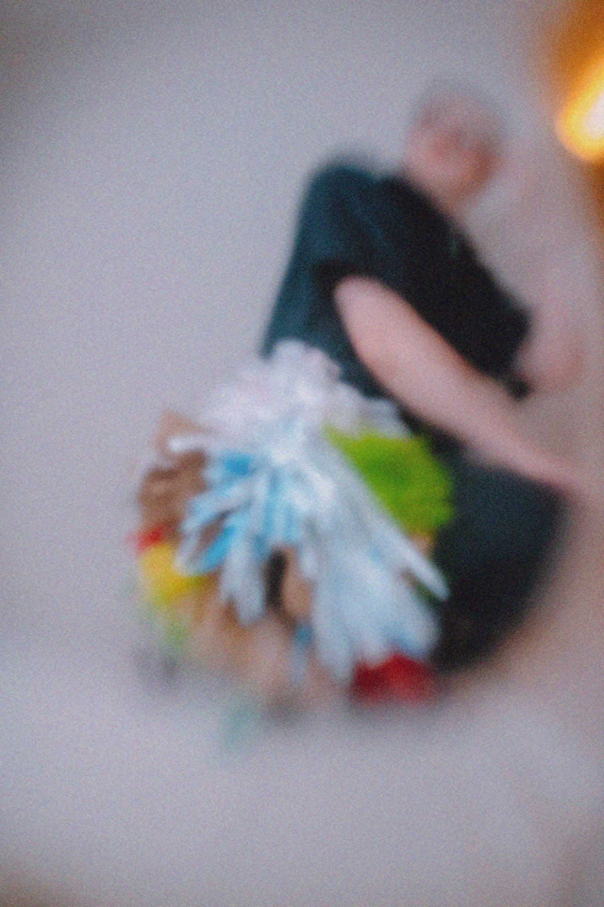
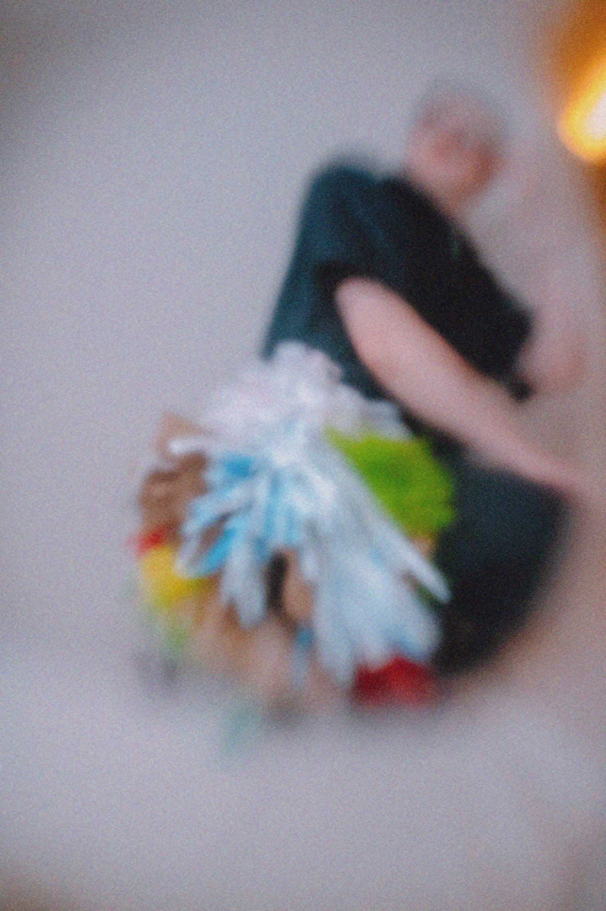

Tapestry as Garment
Upon finishing this piece, I found the dimension and volume reminded me of tulle. This led me in
the direction of seeing this tapestry as also a garment.
I tried experimenting with this as a sort of dress/belt. It isn't big enough to fit around me, so
it felt like a body ornament more than anything. Either way, this began my interest in mimicking fabric with
these plastic tapestries.
Sketch of plastic garment.
Original tapestry: Only Time Makes
It Human II.


 
